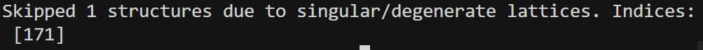
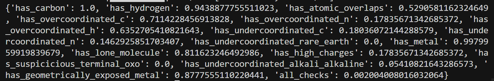

3-6-repo
修改代码详情¶
1. crysbfn/pl_modules/bfn_base.py¶
dtime4continuous_loss增加参数：use_lognormal,lognormal_dims,lognormal_scale。- 当
use_lognormal=True且lognormal_dims>0时：前lognormal_dims维用 log-normal NLL，其余维仍用 MSE；时间权重逻辑不变。
2.models/crysbfn_bhm.py¶
- Lattice loss：从 config/kwargs 读
lattice_use_lognormal、lattice_lognormal_scale，调用dtime4continuous_loss时传入，对前 3 维（log lengths）用 log-normal。 - Volume 正则:
- 原先：先
params_to_lengths_angles→ 算pred_vol/gt_vol→log(pred_vol)/log(gt_vol)再算 log-normal NLL；下界在「体积空间」；整体包在try: ... except: pass里。 - 现在：全程 log 空间：用
log(V)=log(a)+log(b)+log(c)+0.5*log(inner)直接算log_vol_pred/log_vol_gt，不再先乘出 V 再取 log；下界改为log_vol_min = log_vol_gt + log(v_min_scale)，惩罚log_vol_pred < log_vol_min；异常改为except Exception as e并打 warning + traceback，不再静默pass。 - Init：从 kwargs 里取并保存
lattice_use_lognormal、lattice_lognormal_scale、vol_lognormal_scale（以及之前就有的vol_loss_weight、vol_min_scale等）。
3.configs/bfn_model_bhm_cond.yaml¶
- 在 model 下增加：vol_loss_weight、vol_min_scale。
- 在 model.BFN 下增加：lattice_use_lognormal: true，lattice_lognormal_scale: 1.2，vol_lognormal_scale: 1.2。(略微调大，来区别MSE)
- 在 model.decoder 下增加：condition_conf: ${conditions}（给 CSPNet 用）。
第三次测试结果¶

#/home/liem/data/mofbfn/checkpoints/logs/mof-csp-exp2/mof_dng_cif_200_inf/ckpt/epoch_234-step_33605-loss_4933.0728.ckpt
# 设置环境变量以防库冲突
PYTHONPATH=. python -m experiments.infer --config-name=bfn_infer_bhm_cond \
experiment.wandb.name=mof-csp-exp2 \
inference.ckpt_path=/home/liem/data/mofbfn/checkpoints/logs/mof-csp-exp2/mof_dng_cif_200_inf/ckpt/epoch_234-step_33605-loss_4933.0728.ckpt \
inference.inference_dir=/home/liem/MOF-BFN/infer_results_test_3_6_min_loss
python -m postprocess.assemble \
--res_path /home/liem/MOF-BFN/infer_results_test_3_6_min_loss/raw_results.pt \
--bb_z_path /home/liem/data/mofbfn/datasets/dng/bb_emb_space_tot_z.pt \
--bb_blocks_path /home/liem/data/mofbfn/datasets/dng/bb_emb_space_tot_blocks_processed.lmdb \
--max_process 500
# 检查连通性 (是否形成了完整的 3D 骨架)
python -m evaluation.connect_check \
--res_path /home/liem/MOF-BFN/infer_results_test_3_6_min_loss/raw_results.pt \
--bb_z_path /home/liem/data/mofbfn/datasets/dng/bb_emb_space_tot_z.pt \
--bb_blocks_path /home/liem/data/mofbfn/datasets/dng/bb_emb_space_tot_blocks_processed.lmdb \
--max_process 500
#有效性检查 (Validity Check)
python -m evaluation.validity_check \
--res_path /home/liem/MOF-BFN/infer_results_test_3_6_min_loss/samples \
--max_process 500
- 组装时出现应该体积是0的坏结构

连通性：0.802 在可以接受的程度

有效性的效果太可怜。
- 下一步的想法：我准备先用源代码训练一遍，看看他训练的loss曲线，有没有我修改后代码遇到的问题。